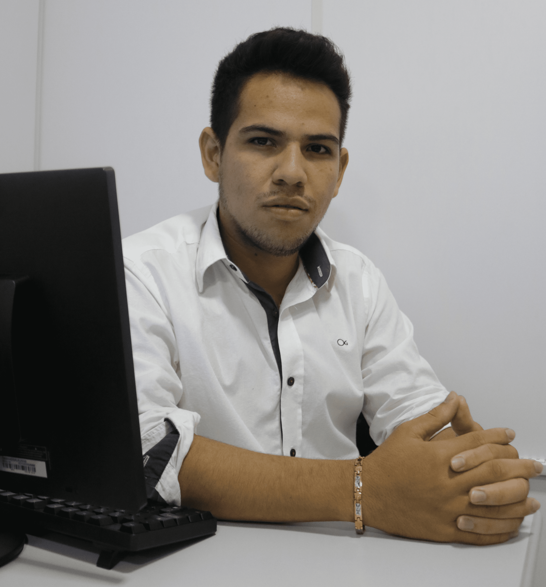

LEONARDO BARBOSA GUERREIRO
21 anos, estudante pré-Enem. Possui formação em oratória pela EPC, na qual lhe rendeu duas importantes apresentações em seu currículo como cerimonialista. Possui cursos livres pela Biblioteca Municipal Dr. Firmo Cardoso e outros certificados pela Recode e Fundação Bradesco. Ademais, possui reconhecimento como melhor aluno na Escola José Maria Moraes, foi vencedor do concurso de redação do Círio de Barcarena e do Concurso Cultura ProgramAção da Recode, em primeiro lugar.

ÁGATHA YASMIN NASCIMENTO DOS SANTOS
19 anos, formada em Técnico em Meio Ambiente pelo IFPA Campus Abaetetuba e planeja ingressar no curso de Licenciatura em Música pelo CCSE da UEPA e na EMUFPA como violinista. Foi voluntária pela Fundação Estudar como embaixadora do curso Liderança na Prática no ano de 2019, além de possuir diversas certificações em cursos livres e profissionalizantes. Em 2019 venceu em 6º lugar no Game Trilha do Alquimista Digital, proposto pela ONG Recode em parceria com o escritor Paulo Coelho.

RONALDO DE SOUSA PINHEIRO
23 anos, estudante do curso de Gestão Hospitalar pela UNIASSELVI. Atualmente profissional do setor de serviços como garçom, além de possuir cursos profissionalizantes de informática, secretariado administrativo e inglês.

GABRIEL SANTOS CARDOSO
18 anos, estudante de gradução em Gestão em Logística pela UNIP e de Engenharia Ambiental e Sanitária pelo CCNT da UEPA, além de ser bolsista pelo programa Bootcamp em Full-stack Development pelo IGTI. Possui conhecimentos avançados em inglês e básicos em mandarim, certificado por entidades como Microlins e Instituto Confúcio da UEPA, além de possuir e estar matriculado em diversos cursos profissionalizantes por instituições como Danki Code, Embrapa, EPC, IFPA, SENAI, SEST SENAT, UEPA e Udemy. Ademais, foi consagrado com o segundo lugar na IX MCTEA e MOCINN no ano de 2018 junto de sua equipe, além de outras premiações.

ELICLÉCIA CARLA DE ALMEIDA MAGALHÃES
21 anos, planeja em ingressar no curso de Bacharelado em Enfermagem pelo CCBS da UEPA. Possui certificações área farmocológica, tendo experiência de 2 meses pela New Farma, importante rede de farmácias da cidade de Barcarena.